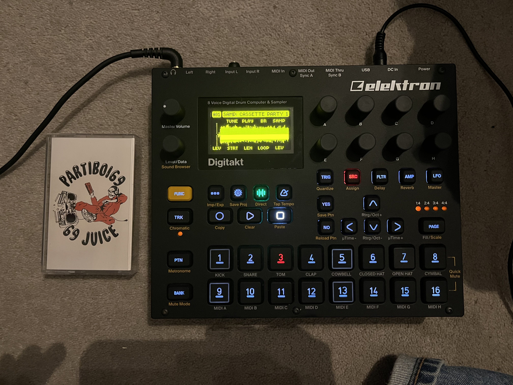
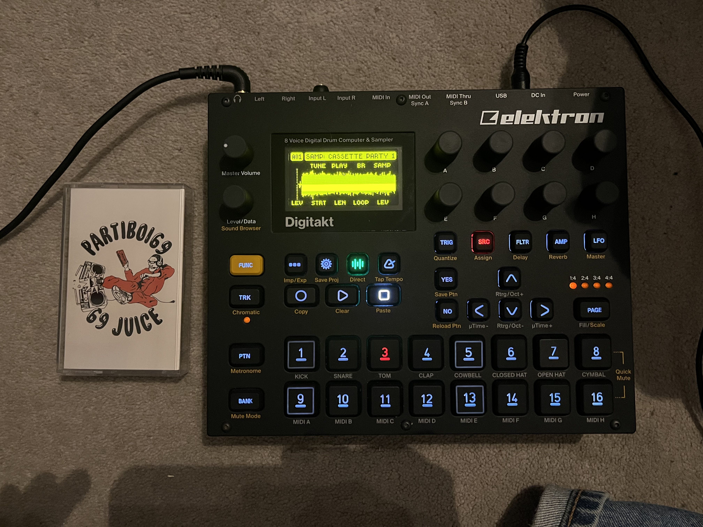

Research & Sampling
I think sampling, as a medium within but also disconnected from music, is such a powerful tool and concept, I group it together with research because I personally feel that sampling plays a similar role to practical research. The process of sampling involves taking a piece of audio and repurposing it, usually by manipulating it or giving it a new context, In this sense I feel like research is quite similar because I see research as a practical tool in which one can collect thoughts, ideas, mediums, techniques, images and much more through researching and then use this in the development and process of their work – sometimes just within their inspiration and idea development and sometimes directly within their outcomes, e.g. using a specific technique that an individual created previously.
Philosopher Guy Debord and Gil J. Wolman wrote about the idea of reusing or repurposing – Debord and others from the SI had a theory called Detournement, a French word referring to a diversion (Cambridge Dictionary, n.d.) or Rerouting. Their theory rejected prior artists’ opinions surrounding originality in art and instead proposed that creatives should repurpose existing material as they wish to create new work. “The mutual interference of two worlds of feeling, or the juxtaposition of two independent expressions, supersedes the original elements and produces a synthetic organization of greater efficacy” (Debord and J Wolman, 1956). The remixing of existing material can only lead to more interesting and exciting work.
My practice is incredibly research driven, as might have become clear from previous components of this essay, I like to be well informed about my project and the context around it. A lot of the time this is extended and involves multi-disciplinary research, however sometimes I stick to more focused and contextual research, like how in Unit 6 Project 1, I tasked myself with deeper reading around the left-wing group of activists, philosophers and creatives calling themselves the ‘Situationist Internationals’ (SI), who created The Derive.
This reading included written material from Guy Debord, a leading figure of the group, who spoke extensively against capitalism. Most of what I was reading surrounded the idea that capitalism fuels society to want more, leading to a never-ending unsatisfaction, “the primary question of survival is undoubtedly resolved, but in such a way that it is constantly rediscovered; it is continually posed again each time at a higher level” he says, essentially stating that survival is no longer enough for our society because we are told that we must have the newest pair of trainers to be happy with ourselves. Spending a considerable amount of time walking around collecting data in Knightsbridge, I found this concept often coming back in to my mind as I would see the flow and quantity of people increase near Harrod’s – no doubt because of this exact claim from Debord that we feel a need to purchase from the latest collection in order to ‘survive’. Having a well-informed approach really accelerates my way of thinking/working and helps with decision making.
Image: Photograph I took of the sampler I used for Unit 6 and a cassette tape that I used as a sample.